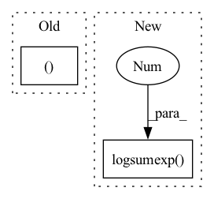

Pattern ID :38526

Before Change
b = torch.randn(4)
c = torch.tensor(0.5)
return (
torch.argmax(a),
torch.argmin(a),
torch.amax(a),
torch.amin(a),
torch.aminmax(a),
torch.all(a),
torch.any(a),
torch.max(a),
a.max(a),
torch.max(a, 0),
torch.min(a),
a.min(a),
torch.min(a, 0),
torch.dist(a, b),
torch.logsumexp(a, 0),
torch.mean(a),
torch.mean(a, 0),
torch.nanmean(a),
torch.median(a),
torch.nanmedian(a),
torch.mode(a),
torch.norm(a),
a.norm(2),
torch.norm(a, dim=0),
torch.norm(c, torch.tensor(2)),
torch.nansum(a),
torch.prod(a),
torch.quantile(a, torch.tensor([0.25, 0.5, 0.75])),
torch.quantile(a, 0.5),
torch.nanquantile(a, torch.tensor([0.25, 0.5, 0.75])),
torch.std(a),
torch.std_mean(a),
torch.sum(a),
torch.unique(a),
torch.unique_consecutive(a),
torch.var(a),
torch.var_mean(a),
torch.count_nonzero(a),
)
After Change
a.min(a),
torch.min(a, 0),
torch.dist(a, b),
torch.logsumexp(a, 0),
torch.mean(a),
torch.mean(a, 0),
torch.nanmean(a),
In pattern: SUPERPATTERN
Frequency: 3
Non-data size: 2
Instances
Fragment ID: 110059752
Project Name: pytorch/pytorch
Commit Name: 91ef3c82615d6ede05d5b86f1bd5571ea95e4ef1
Time: 2022-03-28
Author: linbin@fb.com
File Name: test/mobile/model_test/math_ops.py
M Class Name: ReductionOpsModule
N Class Name: ReductionOpsModule
M Method Name: reduction_ops(1)
N Method Name: reduction_ops(1)
M Parent Class: torch.nn.Module
N Parent Class: torch.nn.Module
M File Name: test/mobile/model_test/math_ops.py
N File Name: test/mobile/model_test/math_ops.py
M Start Line: 225
M End Line: 264
N Start Line: 222
N End Line: 264
'>
Before Change
)
)
return tight_loss, logs
def get_distortion(self, Y_hat, targets):
raise NotImplementedError()
After Change
// tightens bound using IWAE: log 1/k sum exp(loss). shape: [batch_size]
if n_z > 1:
rate = torch.logsumexp(rate, 0) - math.log(n_z)
distortion = torch.logsumexp(distortion, 0) - math.log(n_z)
else:
distortion = distortion.squeeze(0)
rate = rate.squeeze(0)
'>
Fragment ID: 110059751
Project Name: yanndubs/lossyless
Commit Name: 0a24755494712f360cfbc0e8b8ac9f6907157997
Time: 2020-12-04
Author: yanndubois96@gmail.com
File Name: lossyless/losses.py
M Class Name: Loss
N Class Name: Loss
M Method Name: forward(4)
N Method Name: forward(4)
M Parent Class: nn.Module
N Parent Class: nn.Module
M File Name: lossyless/losses.py
N File Name: lossyless/losses.py
M Start Line: 35
M End Line: 53
N Start Line: 30
N End Line: 59
'>
Before Change
b = torch.randn(4)
c = torch.tensor(0.5)
return (
torch.argmax(a),
torch.argmin(a),
torch.amax(a),
torch.amin(a),
torch.aminmax(a),
torch.all(a),
torch.any(a),
torch.max(a),
a.max(a),
torch.max(a, 0),
torch.min(a),
a.min(a),
torch.min(a, 0),
torch.dist(a, b),
torch.logsumexp(a, 0),
torch.mean(a),
torch.mean(a, 0),
torch.nanmean(a),
torch.median(a),
torch.nanmedian(a),
torch.mode(a),
torch.norm(a),
a.norm(2),
torch.norm(a, dim=0),
torch.norm(c, torch.tensor(2)),
torch.nansum(a),
torch.prod(a),
torch.quantile(a, torch.tensor([0.25, 0.5, 0.75])),
torch.quantile(a, 0.5),
torch.nanquantile(a, torch.tensor([0.25, 0.5, 0.75])),
torch.std(a),
torch.std_mean(a),
torch.sum(a),
torch.unique(a),
torch.unique_consecutive(a),
torch.var(a),
torch.var_mean(a),
torch.count_nonzero(a),
)
After Change
a.min(a),
torch.min(a, 0),
torch.dist(a, b),
torch.logsumexp(a, 0),
torch.mean(a),
torch.mean(a, 0),
torch.nanmean(a),
'>
Fragment ID: 110059750
Project Name: pytorch/pytorch
Commit Name: 28a4b4759add0b3eb0f4c34a1e042be4f93e976e
Time: 2022-03-30
Author: linbin@fb.com
File Name: test/mobile/model_test/math_ops.py
M Class Name: ReductionOpsModule
N Class Name: ReductionOpsModule
M Method Name: reduction_ops(1)
N Method Name: reduction_ops(1)
M Parent Class: torch.nn.Module
N Parent Class: torch.nn.Module
M File Name: test/mobile/model_test/math_ops.py
N File Name: test/mobile/model_test/math_ops.py
M Start Line: 225
M End Line: 264
N Start Line: 222
N End Line: 264